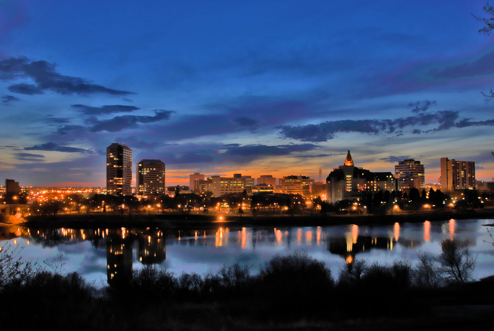

Saskatoon (/ˌsæskəˈtuːn/) is the largest city in the Canadian province of Saskatchewan. It straddles a bend in the South Saskatchewan River in the central region of the province. It is located along the Trans-Canada Yellowhead Highway, and has served as the cultural and economic hub of central Saskatchewan since its founding in 1882 as a Temperance colony.[8]
With a 2016 census population of 246,376, Saskatoon is the largest city in the province, and the 17th largest Census Metropolitan Area in Canada, with a 2016 census population of 295,095. The City of Saskatoon has estimated its population to be 278,500 as of July 2018,[9] while Statistics Canada has estimated the CMA's population to be 336,614 as of 2020.[10]
Saskatoon is home to the University of Saskatchewan, the Meewasin Valley Authority which protects the South Saskatchewan River and provides for the city's popular riverbank park spaces, and Wanuskewin Heritage Park, a National Historic Site of Canada and UNESCO World Heritage applicant representing 6,000 years of First Nations history. The Rural Municipality of Corman Park No. 344, the most populous rural municipality in Saskatchewan, surrounds the city and contains many of the developments associated with it, including Wanuskewin. Saskatoon is named after the saskatoon berry which is native to the region, and is itself derived from the Cree misâskwatômina. The city has a significant Indigenous population and several urban Reserves. The city has nine river crossings and is nicknamed "Paris of the Prairies" and "Bridge City".
Historic neighbourhoods of Saskatoon include Nutana and Riversdale, which were separate towns before amalgamating with the town of Saskatoon and incorporating as a city in 1906. Nutana, Riversdale, their historic main streets of Broadway Avenue and 20th Street, as well as the downtown core and other central neighbourhoods are seeing significant reinvestment and redevelopment. Sutherland, the rail town annexed by the city in 1956 that lies beyond the University lands, is now another historic old city.
The name Saskatoon (in Cree: sâskwatôn, "Saskatoon" or the locatives: misâskwatôminihk, lit: "at the saskatoon berry", misâskwatôminiskâhk, "at the place of many saskatoon berries", mînisihk "at the berry") comes from the Cree inanimate noun misâskwatômina "saskatoon berries", which refers to the sweet, violet-coloured berry that grows in the area.
City of Saskatoon archivist Jeff O'Brien wrote that the traditional story of the name is that it was due to presence of Saskatoon berries in the area. "There is even an almost certainly apocryphal story to the effect that John Lake, upon being given a handful of these berries and told their name immediately cried “Arise, Saskatoon – Queen of the North!”
However, he wrote, "the truth appears to be somewhat less dramatic. The area was long-known to the local Cree as a good place to stock up on willow wands for arrow shafts. Thus the name of the place was “Sask-kwa-tan” – roughly, “the place where willows are cut.”[11] [Return]
In 1882, the Toronto-based Temperance Colonization Society was granted 21 sections of land straddling the South Saskatchewan River, between what is now Warman and Dundurn. The aim of the group was to escape the liquor trade in that city and set up a "dry" community in the Prairie region. The following year settlers, led by John Neilson Lake, arrived on the site of what is now Saskatoon and established the first permanent settlement. The settlers travelled by railway from Ontario to Moose Jaw and then completed the final leg via horse-drawn cart, as the railway had yet to be completed to Saskatoon.[12]
a woman standing over a busy trainyard in Saskatoon with the words "Saskatoon, the Wonder City" Small booklet depicting a woman standing over a busy trainyard in Saskatoon (Source: https://archive.org/details/prairiepromisespostcard_109) In 1885 the Northwest Rebellion affected the tiny community in a variety of ways. Chief Whitecap and Charles Trottier passed through the present day University campus on their way to join Louis Riel's armed forces at Batoche, Saskatchewan. Following the fighting at the Battle of Fish Creek, and the Battle of Batoche, wounded Canadian soldiers convalesced at the Marr Residence which is today a historic site. A few died in care and were buried in the Pioneer Cemetery near the Exhibition Grounds.
A town charter for the west side of the river was obtained in 1903 (Nutana became a village in that year). In 1906 Saskatoon became a city with a population of 4,500, which included the communities of Saskatoon, Riversdale and Nutana. In 1955 Montgomery Place and in 1956 the neighbouring town of Sutherland were annexed by the fast-growing City of Saskatoon.[13] [Return]
Saskatoon lies on a long belt of rich, potassic chernozem in middle-southern Saskatchewan and is found in the aspen parkland biome. The lack of surrounding mountainous topography gives the city a relatively flat grid, though the city does sprawl over a few hills and into a few valleys. The lowest point in the city is the river, while the highest point is disputed between the suburb of Sutherland in the east side and the Silverwood-River Heights areas in the city's north end. Saskatoon, on a cross-section from west to east, has a general decline in elevation above sea level heading towards the river, and on the east bank of the river, the terrain is mostly level until outside the city, where it begins to decrease in elevation again. [Return]